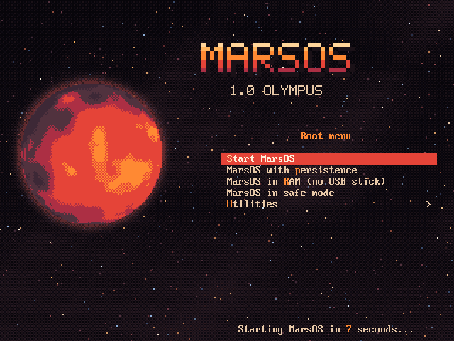
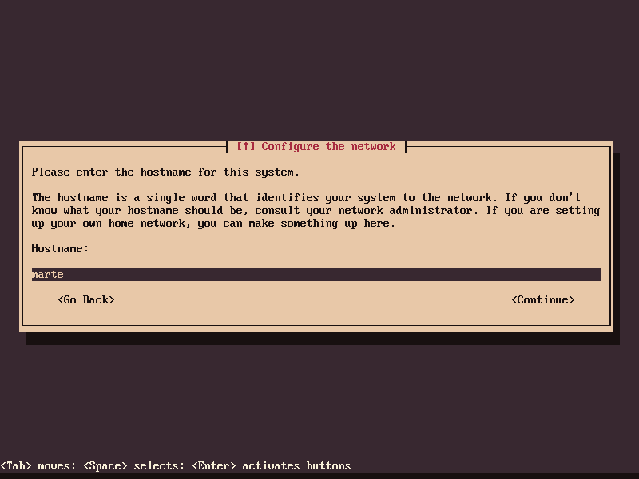
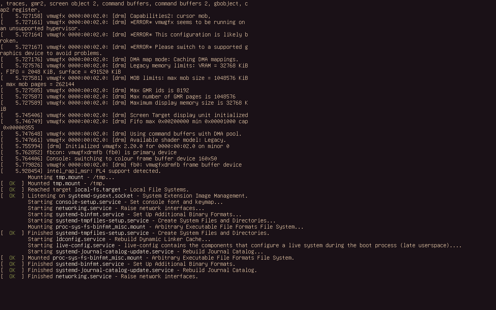
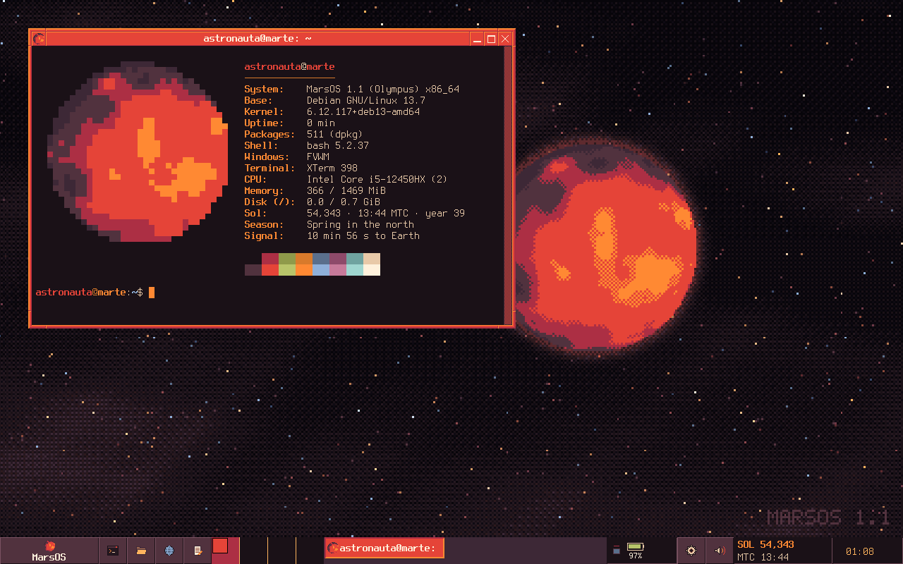
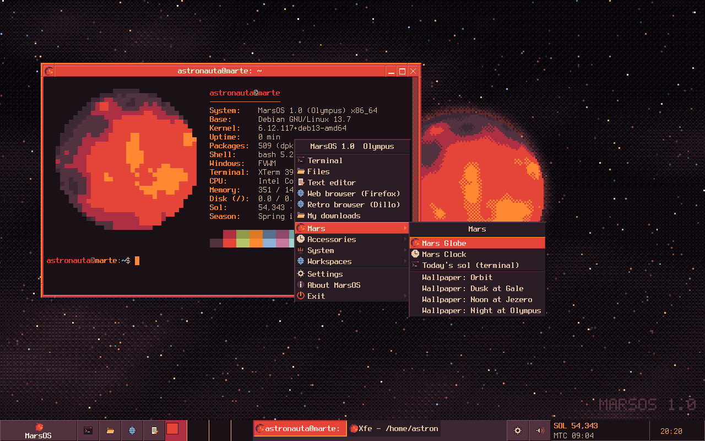
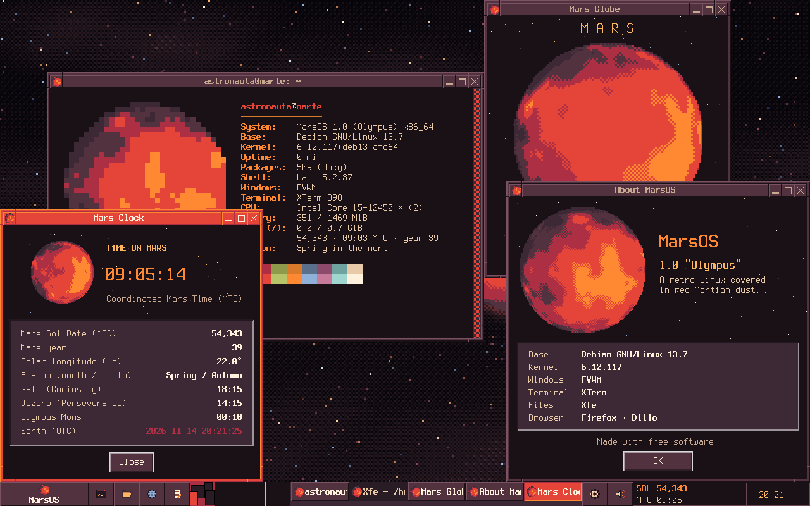
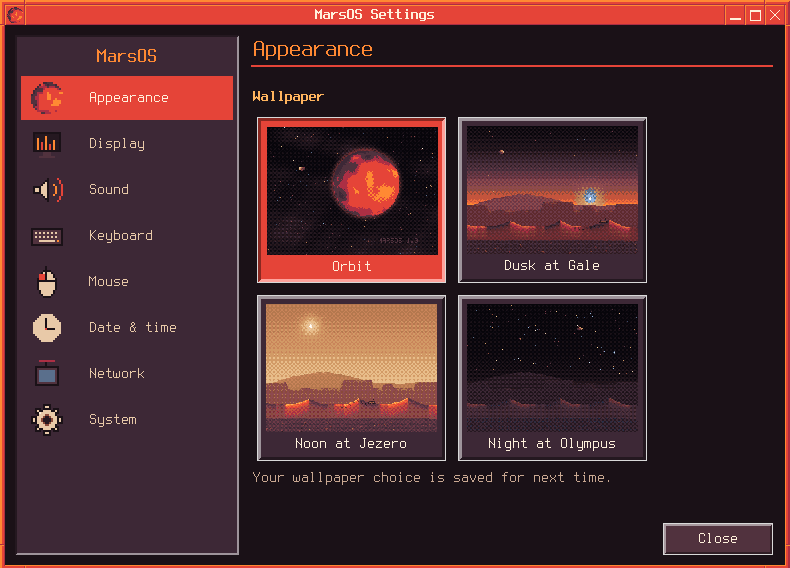

MARSOS
1.1 OLYMPUS
A retro Linux covered in red Martian dust.
Debian 13 base with the look of 90s Linux: text-mode boot, FVWM windows, bitmap fonts, chiptune sound, a clock that tells the time on Mars and a lander game. English or Portuguese, live or installed.
What's on board
Retro boot
Boot menu with the planet where you pick English or Portuguese, kernel messages in text mode and a Martian console palette.
Install to disk
A text-mode installer in Martian colours copies the system to your disk, with your own user and password.
FVWM windows
The classic 90s window manager, with a panel (network, battery, Mars clock) and 4 workspaces: Olympus, Valles, Gale and Jezero.
Time on Mars
Mars Sol Date, MTC, season and local time where Curiosity and Perseverance are, using NASA's Mars24 algorithm.
Signal delay
How far Earth is and how long a radio message takes to get there (3 to 22 minutes), from JPL orbital elements.
Mars Touchdown
An original lander game: five real landing sites, Mars gravity, little fuel and dust-storm winds.
Sound
PipeWire, panel volume, a chiptune startup sound and soft sounds for windows, workspaces and alerts.
Screenshots
Print Screen for the screen, Alt for a window, Shift to pick an area. Saved to Pictures.
Settings
A retro control panel: wallpaper, resolution, sound, keyboard, mouse, time zone, network, language and system.
Internet
Firefox for everyday browsing and Dillo for surfing the old-school way.
Persistence
Run it from a USB stick and keep your files and programs from one boot to the next, without installing.
Proper terminal
XTerm with the Terminus font, marsfetch, sol, Midnight Commander and htop.
What it looks like















Get MarsOS
| File | marsos-1.1-amd64.hybrid.iso |
| Size | 940 MB |
| Version | 1.1 "Olympus" (English and Português) |
| Base | Debian GNU/Linux 13 (trixie), kernel 6.12 |
| Boot | BIOS and UEFI (hybrid ISO: CD, USB stick or VM) |
| SHA-256 | 3bd1146d80cb648b5f132b7ee7fca2cf3418fb5bfebec61235379b008de459a2 |
Requirements
- 64-bit PC (x86-64)
- 1.5 GB of RAM (2 GB recommended)
- A USB stick of 2 GB or more
- Runs straight from the USB stick; to install, 8 GB of disk
Login
Logs in automatically as astronauta.
Password, if asked: live
How to use it
Write it to a USB stick
On Windows use Rufus (DD image mode) or balenaEtcher. On Linux:sudo dd if=marsos-1.1-amd64.hybrid.iso of=/dev/sdX bs=4M status=progressBoot it
Restart the PC, pick the USB stick in the boot menu (usually F12, F11 or Esc) and choose Start MarsOS - English (or Iniciar o MarsOS - Portugues).Or use a virtual machine
In VirtualBox: type Debian 64-bit, 2 GB of RAM, VMSVGA graphics and Intel HD Audio. Put the ISO in the CD drive and power it on.Want to keep your files?
Create an ext4 partition labelledpersistenceon the USB stick with apersistence.conffile containing/ union. Then boot Persistence - English.Or install it
Choose Install MarsOS in the boot menu. The installer asks for your language, disk, user and password, and copies MarsOS to the disk.
astronauta@marte:~$ sol
Frequently asked questions
Will MarsOS erase my Windows?
How do I switch between English and Portuguese?
What is the signal delay?
sol in the terminal to see today's delay.Where do my downloads go?
Downloads folder (menu → My downloads). In normal mode everything is gone at shutdown; to keep things, use persistence mode.How do I install other programs?
sudo apt update, then sudo apt install program-name. With persistence, the program is still there after a reboot.How do I change the keyboard, mouse or resolution?
Can I build the ISO myself?
sudo ./build.sh. GitHub Actions also builds it automatically, and there are Windows scripts that do everything using VirtualBox.